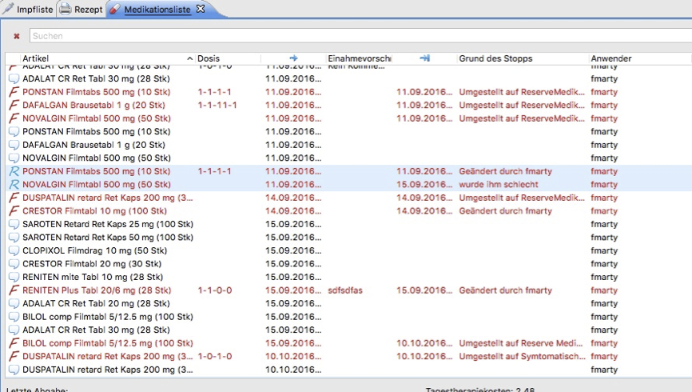
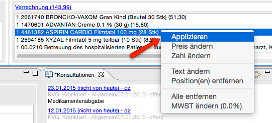
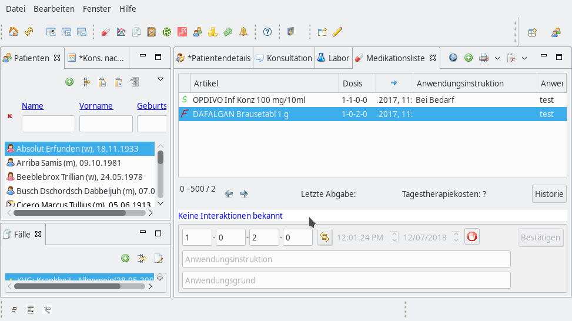
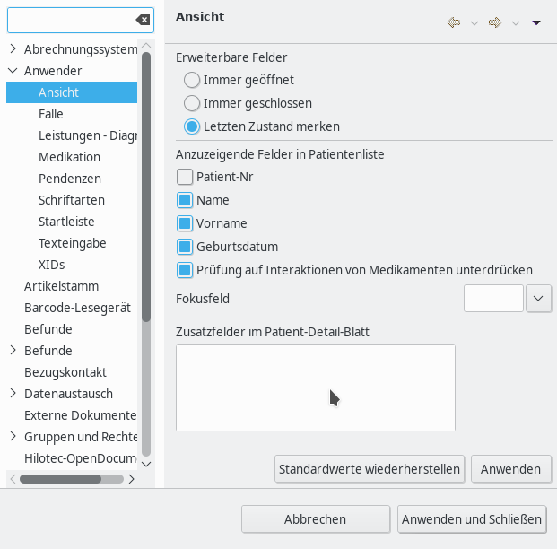
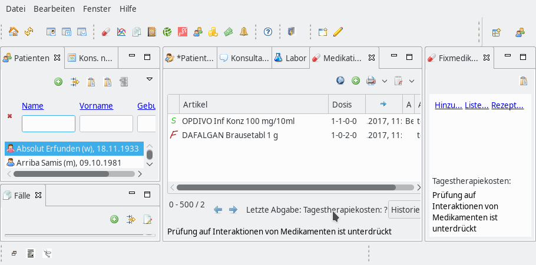

Medikamentenliste
| Version: | 3.1.0 |
| Kategorie: | Klinische Hilfsmittel |
| Beschreibung: | Die Medikationsliste speichert alle abgegebenen, applizierten und verordneten Medikamente und Artikel |
| Author der Docu: | Franz Marty <mesmeta@bluewin.ch> |
| Letzte Bearbeitung: | 07. Dezember 2018 |
| Voraussetzungen: | Elexis 3.1 |
| Betriebssystem: | Windows, Mac, Linux |
| Lizenz: | Eclipse Public License (EPL) |
Contents
Einführung
Die Medikationsliste zeigt die aktuelle Medikation des Patienten mit Fixmedikation, Reservemedikation und Symptomatika (Grippemittel etc). Symptomatika werden 30 Tage nach Verordnung automatisch aus der Liste entfernt.
Die 'Historie' umfasst alle dem Patienten je abgegebenen/rezeptierten Medikamente.
Installation und Deinstallation
Die Medikationsliste wird mit dem Kern von Elexis ausgeliefert. (OpenSource Elexis via Installation Elexis 3.0 OpenSource)
!! Um das neue Plugin "Medikationsliste" problemlos nutzen zu können, müssen vor der Verwendung die alten Medikamente mit dem Artikelstamm abgeglichen werden, auch wenn der Artikelstamm bereits verwendet wird !!
Dafür muss im Elexis ein Skript ausgeführt werden. Gehen Sie dafür wie folgt vor:
Hilfe - DB Überprüfung - External Maintance Tools - at.medevit.ch.artikelstamm.medelexis.dbcheck: [1683] Artikel und Lagerlisten in Artikelstamm überführen - Execute.
Dies kann einige Minuten dauern. Mit diesem Skript werden die Medikamente aus dem alten Stamm in den neuen Artikelstamm überführt.
Zudem muss in den Einstellungen unter Anwender - Medikation das Häkchen bei "Beim dispensieren auf Artikelstamm prüfen, und konvertieren" gesetzt sein.
Damit werden die Medikamenten beim Dispensieren überprüft ob sie aus dem alten Stamm kommen und wenn ja in den Artikelstamm übernommen.
Übersicht
Abb 1: Übersicht Medikationsliste mit Rechtsklick-Menü
Spaltentitel der Medikationsliste
Von links nach rechts:
- Ohne Titel ganz links bezeichnet Status der Einnahme: ‘F’ steht für Fixmedikation, ‘R’ für Reservemedikation, 'S' für Symptomatika (Medikament mit kurzer Laufzeit).
- 'Artikel': Name des Artikels mit Anzahl Tabletten, Menge des Wirkstoffes
- 'Dosis': Posologie mit Eintrag 'morgen/mittag/abend/nacht'
- 'Pfeil nach rechts': Tag der Verordnung
- 'Einnahmevorschrift': Kommentar zur Einnahme (kann in der Fusszeile editiert werden, siehe unten)
- 'Anwender': Verordner
Die Menüleiste der View 'Medikationsliste'
Die Bedeutung der Icons von links nach rechts:
- Prüft Interaktion der Medikamente in der Medikamentenliste. Klick auf Icon öffnet den voreingestellten Browser (Auswahl unter: Einstellungen/Webbrowser) und ruft den Interaktions-Check von Epha auf [[1]]. Ab Elexis 3.7 wird das Resultat der Überprüfung auf Interaktionen standardmässig in den Ansichten Medikationslist, Fixmedikation und Konsultation angezeigt. Siehe Abschnitt Prüfung auf Interaktionen zwischen Medikamenten
- Das 'grüne +' fügt der Medikationsliste ein Medikament hinzu: ein Klick öffnet das Fenster Leistungen --> Artikelstamm für die Auswahl eines neuen Medikamentes. Doppelklick auf den ausgewählten Artikel oder ‘Drag n Drop’ öffnet ein Dialogfenster zur Spezifizierung der Verordnung, mit Feldern für die Posologie (morgen/mittag/abend/nacht), Bestimmung der Medikationsart ('Reservemedikament, 'Fixmedikament' oder 'Symptomatika') und der Angabe, ob der Artikel abgegeben oder rezeptiert wird.
- Die Spezifizierung kann hinterlegt werden, auf den Artikel oder auf den Wirkstoff (ATC-Code). Ein Klick auf o.k trägt den Artikel in die Medikationsliste ein und verrechnet die abgegebenen Medikamente.
- Öffnet Dialog für Rezeptdruck.
- Öffnet Dialog für den Druck einer Medikamentenliste.
- Aktiviert die 'persönliche Sortierung'. Die Voreinstellung ist Sortierung nach Abgabetag. Die Artikel können im Rechtsklick-Menü (siehe unten) sortiert werden. Ist 'persönliche Sortierung' aktiv kann nicht via Spaltentitel sortiert werden.
Das Rechts-Klick Menü
- Mit ’Aufwärts’ und ‘Abwärts’ lassen sich die Zeileneinträge nach oben oder unten verschieben. Dies erlaubt die Gruppierung von Medikamenten (z.B alle Kardiaka, alle Schmerzmittel etc).
- Die Auswahl von 'Symptomatika', ‘Fixmedikation’ oder ‘Reservemedikation’ setzt das 'S', ‘F’, respektive das ‘R’ in Spalte 1 der Medikationsliste.
- ‘Vermerk in Konsultation’ setzt die aktivierten Medikamente in das Textfeld der Konsultations-View. Ist keine tagesaktuelle Konsultation offen, muss eine eröffnet werden.
- ‘Medikation anpassen’ öffnet das Fenster Leistungen --> Artikelstamm für die Auswahl einer Medikamentenanpassung, z.B. 100-er Packung anstelle der 30-er Packung oder erhöhter Wirkstoffinhalt wie z.B. Amlodipin 10 mg anstelle von 5 mg. Die Änderung wird historisiert, das heisst, die zuvor gültige Packung/Wirkstoffmenge in der Historie abgelegt.
- ‘Artikel auf die Bestellliste setzen’ setzt den Artikel auf den Bestellschein.
- ‘Rezeptieren’ aktiviert für die ausgewählten Medikamente der Rezeptdruck und legt das Ereignis in der Historie ab.
- ‘Dispensieren’ verrechnet die aktivierten Medikamente und legt das Ereignis in der Historie ab.
- ‘Einnahmeliste drucken’ druckt Einnahmeliste.
- 'Löschen' löscht einen versehentlich eingegeben Artikel.
Die Fussleiste
Die Fussleiste (Abb 1) zeigt einen Button zum Wechsel in den Modus 'Historie'.
Abb 2: Medikationsliste im Modus 'Historie

Die ‘Historie’ zeigt alle jemals verordneten und abgegebenen, respektive rezeptierten Medikamente an.
- Es werden 2 zusätzliche Spaltentitel aufgeführt
- -->| steht für Datum des Stopps
- 'Grund des Stopps' ist selbsterklärend
- 'Anwender': Verordner des Stopps
- Die Eingabe im Suchfeld filtert nach Medikament
- Ein Klick auf den Spaltentitel sortiert alphabetisch
- Die Aktivierung eines Medikamentes in der Liste mit Zuweisung von Fixmedikation respektive Reservemedikation im Rechtsklick-Menü, setzt das Medikament wieder in die Medikationsliste
Die Aktivierung eines Artikels in der Medikationsliste (in Abb 1 'Adalat') werden unterhallb der Fussleiste drei zusätzliche Zeilen angezeigt (Abb 1):
- Zeile 1 ermöglicht den Eintrag eines Dosierungsschemas oder, bei hinterlegter Posologie, eine Veränderung des Dosierungsschemas. Mit dem ‘Pfeile’-Icon kann vom Vierfelder-Schema der Posologie auf Texteingabe gewechselt werden. Anschliessend folgt Zeit und Tag der Verordnung. Ein Klick auf die rote Taste stoppt ein Medikament (siehe unten).
Die Einträge oder Änderungen werden erst nach Klick auf die Schaltfläche ‘Bestätigen’ aktiv.
- Zeile 2 ermöglicht Texteingabe zur Einnahmevorschrift.
- Zeile 3 ermöglicht Texteingabe für Zusatzbemerkungen.
- Ein Klick auf das Icon mit der roten Hand (Stopp eines Medikamentes) lässt in Zeile 2 den ‘Grund des Stopps’ sowie in Zeile 3 eine allfällige Unverträglichkeit, Allergie eintragen.
Standard Signaturen
Ist beim Hinzufügen eines Medikamentes zur Medikationsliste eine Standard-Signatur für dieses Medikament vorhanden, werden die Angaben der Signatur eingesetzt. Ist keine vorhanden öffnet sich ein Dialogfenster 'Verordnungs Signatur'. Folgende Informationen können definiert werden:
- Dosis (in Zahl- oder Textform)
- Ein Kommentar (Beispielsweise: mit einem Glas Wasser einnehmen)
- Datum Medikationsart
- Status der Medikation:
- Symptomatische Medikation
- Reserve Medikation
- Fix Medikation
- Dispensart des Medikamentes
- Keine Abgabe (Rezept)
- Abgabe
Unter "Datei --> Einstellungen --> Anwender--> Medikation kann der Signatur-Dialog folgendermassen konfiguiert werden.
- "Signatur Dialog auch bei vorhandener Standard-Signatur anzeigen": Zeigt diesen Dialog immer an. So können beim Verordnen Dosierung oder Status des Medikamentes angepasst werden.
Ist dies nicht aktiviert werden die Angaben ohne aufpoppen des Dialogfeldes in der Medikationsliste eingetragen. Änderungen in Posologie müssen dann in der Medikationsliste vorgenommen werden.
- Im Signatur Dialog "Abgabe" vorselektieren: Verrechnet das Medikament immer, bei einer Selbstdispensierenden Praxis muss so nicht jedes Mal von Hand selektiert werden.
Workflow-Beispiele Eintrag eines Medikamentes in die Medikationsliste
Verordnung eines neuen Medikamentes
Das 'grüne +' fügt der Medikationsliste ein Medikament hinzu: ein Klick öffnet das Fenster Leistungen --> Artikelstamm für die Auswahl eines neuen Medikamentes. Doppelklick auf den ausgewählten Artikel oder ‘Drag n Drop’ öffnet ein Dialogfenster zur Spezifizierung der Verordnung, mit Feldern für die Posologie (morgen/mittag/abend/nacht), Bestimmung der Medikationsart ('Reservemedikament, 'Fixmedikament' oder 'Symptomatika') und der Angabe, ob der Artikel abgegeben oder rezeptiert wird.
- Die Spezifizierung kann hinterlegt werden, auf den Artikel oder auf den Wirkstoff (ATC-Code). Ein Klick auf o.k trägt den Artikel in die Medikationsliste ein und verrechnet die abgegebenen Medikamente.
Dispensation respektive Rezeptierung
Ein Medikament der Medikationsliste kann via Rechtsklick-Menü dispensiert (wird automatisch verrechnet) oder rezeptiert (stösst den Rezeptvorgang an) werden.
'Verrechnung' in der KonsultationsView
Ein Klick auf 'Verrechnung' in der Konsultations-View öffnet wie bisher die View 'Leistungen' mit dem Tab 'Artikelstamm' zur Auswahl des Medikamentes. Ein Doppelklick auf das ausgewählte Medikament verrechnet dieses und trägt es als dispensiertes Medikament in die Historie der Medikationsliste ein. In der Historie kann es via Rechtsklick als Reserve-, Fix- oder symptomatische Medikation ausgewählt werden und erscheint dann mit dem gewählten Attribut in der Medikationsliste.
Aus der View 'Konsultation' ist beim jetzigen Stand der Dinge ein direkter Eintrag in die Medikationsliste nicht möglich.
Ist das Medikament als Favorit gespeichert (siehe dort), wird bei Eintrag des entsprechenden Kürzelnamens ('Kürzel$') im Konsultationstext das Medikament direkt in die Medikationsliste eingetragen und verrechnet.
'Verrechnung' via Barcode-Leser
Mit dem Barcode-Leser können Medikamente aus verschiedenen Views heraus eingelesen werden. Um Medikamente einscannen zu können muss der Scanner installiert, eingerichtet und mit dem Scanner-Icon in der Startleiste aktiviert werden. Wird dann ein Medikament eingescannt (zum Beispiel in der Kons, im Artikelstamm oder in der Medikationsliste), wird es gleich verrechnet und in der Medikationsliste in der Historie als Dispensiert eingetragen.
'Applikation' eines Medikamentes
Medikamente die in der Praxis appliziert werden, also eingenommen oder gespritzt werden (Impfungen), stellen eine direkte Leistung am Patienten dar. Diese Leistungen sind nicht Mehrwertsteuer pflichtig.
In der Konsultations View kann mit Rechsklicken auf ein verrechnetes Medi, dieses appliziert werden. Das Applizieren eines Medikamentes führt zur Angabe der Anzahl und dem Setzen der Mehrwertsteuer (MwSt) auf 0%. Im Dialog zur Angabe der Anzahl ist immer die kleinste Grösse vorausgewählt. Also bspw. bei einer 28Stk Packung wird per Default 1/28 vorangegeben. In der Historie der Medikationsliste erschein der applizierte Artikel mit dem Icon einer Spritze.
Abb 4: Applizieren eines Medikaments aus der KonsView

Prüfung auf Interaktionen zwischen Medikamenten
Diese Prüfung basiert auf den Daten von EPHA, welche diese Daten kostenlos zur Verfügung stellt. Besten Dank dafür!
Ab Elexis 3.7 wird das Resultat der Überprüfung auf Interaktionen standardmässig in den Ansichten Medikationslist, Fixmedikation und Konsultation angezeigt. Diese Überprüfung kann in den Einstellungen unterdrückt werden.
Beim ersten Aufstarten und wenn Änderungen in den Daten von EPHA festgestellt werden, werden die Daten eingelesen, was in weniger als einer Minute (je nach Internet-Anbindung) der Fall sein sollte.
Falls zu den Medikamenten in der Liste keine Interaktionen bekannt sind, zeigt die Medikationslist die mit der Zeile "Keine Interaktionen bekannt" an.

Falls nach dem Hinzufügen von Medikamenten Warnungen oder Kontraindikationen auftauchen, ändert sich die Zeile und der Warnhinweis auf die schwerwiegendste Interaktion wird ausgegeben. Mit einem Klick auf den Warnhinweis öffnet sich in einem externen Browser die Seite von EPHA mit allen Detailinformationen.
Überprüfung auf Interaktionen unterdrücken
Via Menüeintrag Datei..Einstellungen wählen Sie dort Anwender..Ansicht auf.

Dort das Häkchen für "Prüfung auf Interaktionen von Medikmenten unterdrücken".
Danach sieht die Medikationsliste wie folgt aus:
